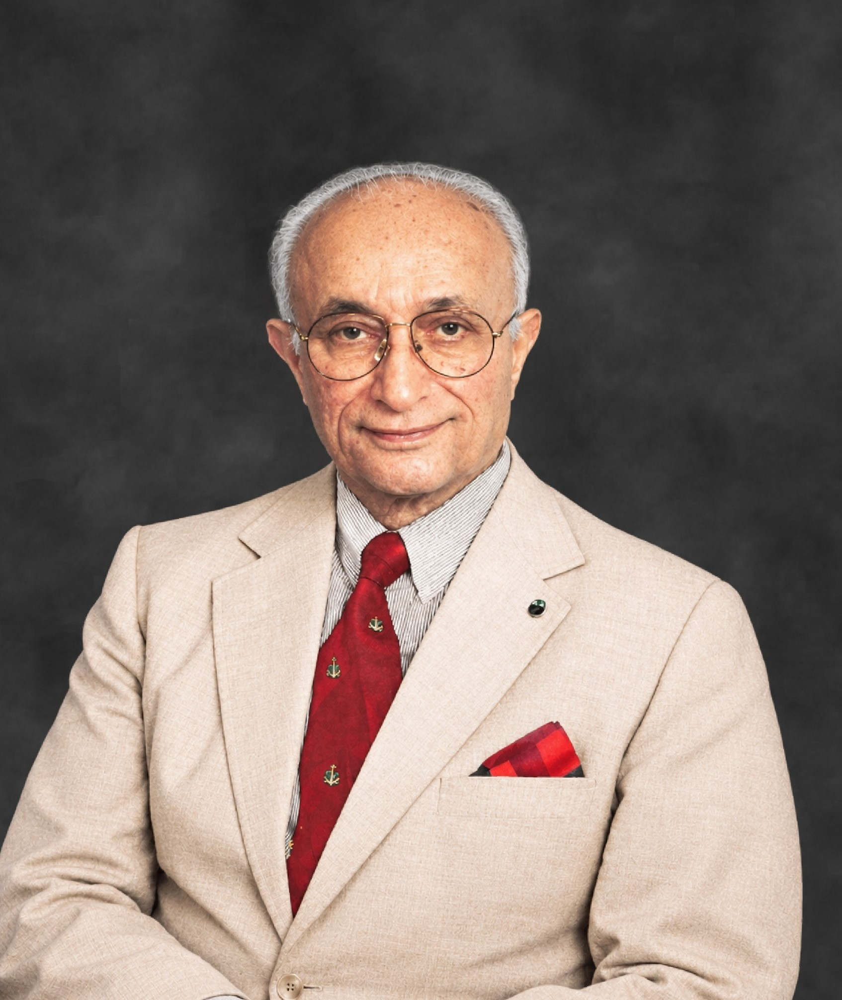

Kassim Dada
1919 — 2001

Kassim Dada was an individual of principles. An astute businessman, a philanthropist, an avid traveller and a man committed to basic values — Kassim Dada's individuality influenced many to add meaning and significance to their own lives.
Following the simple principle of fairness, clarity and sincere application to all things in life, he worked hard to make Dadex a company that would not only be recognised for its quality of work and products, but one which would be recognised for its integrity.
The Dadex Vision signifies all those qualities that were an intrinsic part of existence for Kassim Dada. The strength and longevity of any successful company does not merely lie in the superiority of its products — but in how it conducts business.
Dadex has evolved into a company that upholds authenticity as a crucial factor in its business practices. Be it in serving customers, product quality or relationships with its clients, the underlying aim is the collective convergence of all values under the principle rule of truthfulness.
“…the conduct towards others must be based on kindness, service, fairness, charity, justice, honesty and the sanctity of promise, pledge or agreement.” — A Ramble through Life, autobiography of Kassim Dada
A life of service across industry.
During his lifetime, Kassim Dada served as Chairman and Director of numerous companies across Pakistan's industrial and financial landscape.
Chairman
- Sikander (Pvt) Ltd.
- Dadex Eternit Limited
- Brooke Bond Pakistan Ltd.
- Berger Paints Pakistan Ltd.
- Dada Agencies Ltd.
- J&N Pakistan Ltd.
- Pakistan Welding Electrodes Ltd.
- Smith Kline & French of Pak. Ltd.
Director
- State Bank of Pakistan
- Dada (Pvt) Ltd.
- Adamjee Sugar Mills Ltd.
- Adamjee Insurance Company Ltd.
- Adamjee Industries Ltd.
- Central Chemical's (Pvt) Ltd.
- Metropolitan Bank Ltd.
- First International Inv. Bank Ltd.
- First International Inv. Fund Ltd.
- Habib Insurance Company Ltd.
Historical record. The positions listed above represent roles held by Kassim Dada during his lifetime (1919–2001). Company names are recorded as they existed at the time of his service.
The founding board
Dadex was established in 1959 by a group of Pakistani industrialists. The first Board of Directors guided the company through its formative years.
- Mr. Kassim Dada
- Mr. Abdur Razzak H.K. Dada
- Mr. Abu Talib H.K. Dada
- Mr. Mohamed Dawjee Dadabhoy
- Mr. Alimohamed H.K. Dada J.P.
- Mr. Yusuf H.K. Dada
- Mr. Mohamed Rafique Saigol
The values that
shaped Dadex.
Explore how Kassim Dada's principles continue to guide the company today — through our history, our quality standards and the way we work.